LMCS
A full-stack supervision management portal for an academic research laboratory, replacing disconnected spreadsheets with role-based access control, real-time student monitoring, and automated report generation.
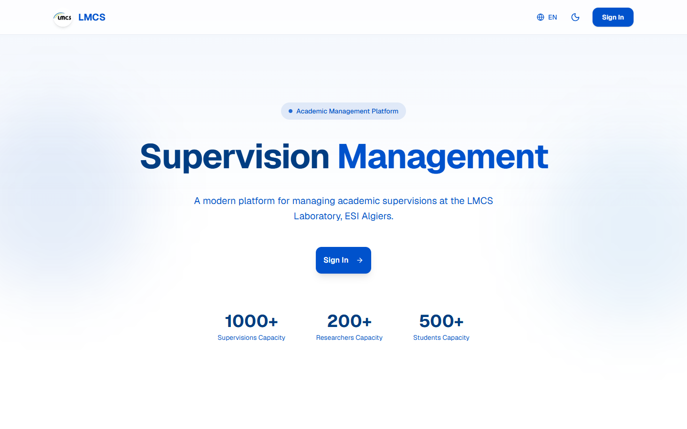
What is LMCS?
LMCS is a web platform designed for the Computer Systems Laboratory (LMCS) at ESI Algiers to manage academic supervisions — tracking students, monitoring progress across semesters, managing supervisor workloads, and generating reports. The platform serves three distinct user roles (supervisors, directors, administrators) through tailored dashboard experiences.
Fragmented workflows with no central system
The LMCS laboratory had no centralized system for managing academic supervisions. Everything was handled through scattered spreadsheets, emails, and manual paperwork. Supervisors struggled to track student progress across semesters, directors had no clear overview of laboratory activity, and there was no role-based access to ensure data security.
The core design challenge: transform these fragmented workflows into a unified platform that makes complex academic data feel simple to navigate — while serving three different user roles with very different needs.
Three roles, three different dashboards
Each role has a tailored dashboard view with specific permissions and data access designed to match their daily responsibilities.
Design goals that shaped decisions
Role-based access control
Each user should only see data relevant to their role — no data leaks, no confusion.
Data-dense but scannable
Directors and supervisors work with large tables — the UI must make scanning fast and filtering intuitive.
Dual theme from day one
Both light and dark themes designed simultaneously — not as an afterthought — with semantic color tokens.
Report generation
Directors need exportable reports (CSV/PDF) for annual reviews without manual data compilation.
Role-based layout & navigation routing
The core architectural challenge was designing an application routing and layout system that adapts to three distinct roles (Supervisors, Directors, Administrators) while maintaining a unified component hierarchy. Each role accesses a scoped sidebar navigation menu with server-validated route guards, preventing privilege escalation.
The persistent sidebar structure was engineered specifically for heavy tabular workloads — supervisors and directors can pivot between student cohorts, defense schedules, and analytics without losing scroll state or data table filters.
PostgreSQL schema & Row Level Security
Data integrity is strictly governed by PostgreSQL schemas in Supabase. Row Level Security (RLS) policies enforce data isolation at the database layer rather than relying on application code:
Supervisor isolation
Supervisors have read/write access strictly bound to their assigned student research cohorts and personal thesis defense evaluations.
Laboratory director aggregate view
Directors query laboratory-wide analytics via optimized SQL views calculating active supervisions, defense success rates, and supervisor quota capacities.
Admin role provisioning
System administrators manage credential provisioning, department assignment, and batch academic year archiving with audit logs.
Typography, colors & component library
The design system was built to feel professional, focused, and enterprise-grade — prioritizing clarity and legibility across data-heavy interfaces.
Typography
Inter is used as the primary typeface — clean, geometric, and optimized for UI. Weights range from Regular (400) for body text to Bold (700) for headings, with tight letter-spacing for a modern feel.
Color System
A deep navy (#0F172A) serves as the dark theme base, paired with vibrant blue (#3B82F6) for primary actions. The light theme uses clean whites with the same blue system, ensuring brand consistency across modes.
Dual Theme
Both themes designed simultaneously using semantic color tokens. Every component adapts seamlessly, with accessible contrast ratios maintained across both modes.
Component Library
Stat cards, data tables, sidebar navigation, form inputs, role badges, status indicators, and chart components — all built as reusable components with consistent spacing and border-radius tokens.
The finished product
Landing Page
The public-facing landing page introduces the platform with a clear value proposition, key statistics, and a direct sign-in CTA — designed in both light and dark variants.
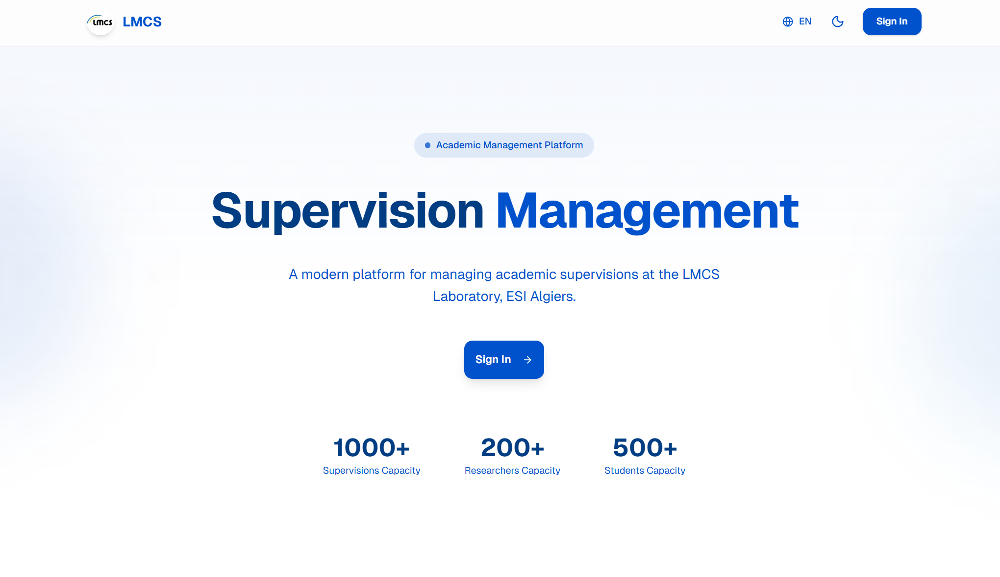
Features & About
The features section showcases three core pillars — Student Management, Progress Tracking, and Reports & Analytics — alongside an about section explaining the laboratory's mission and user roles.
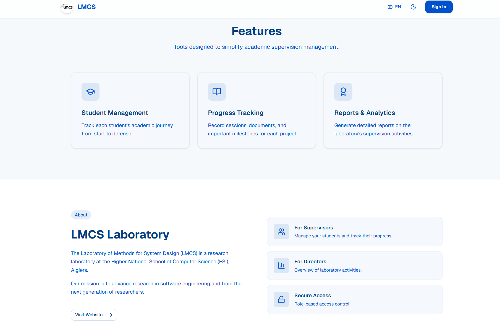
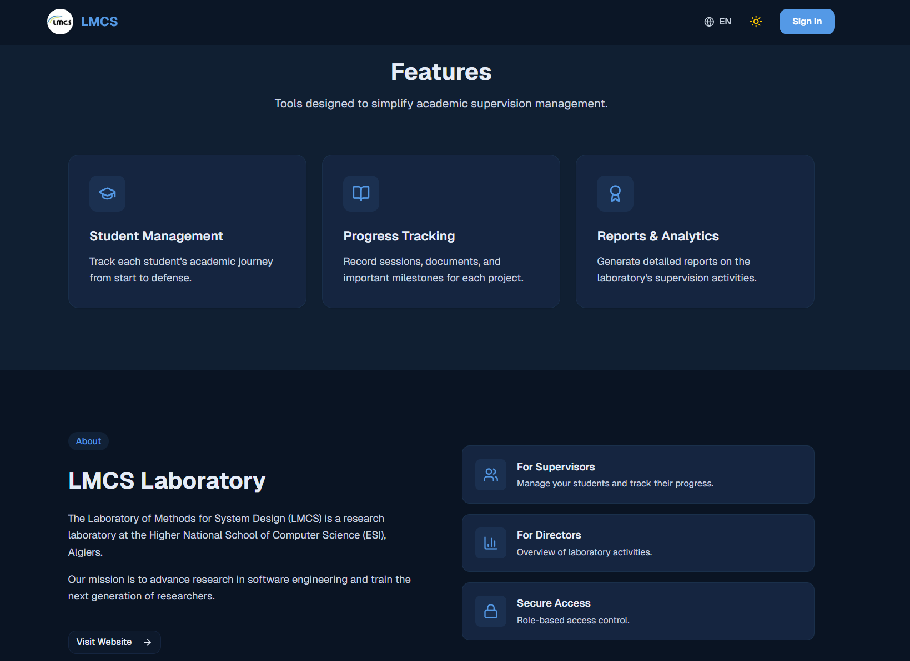
Sign In Experience
A clean split-layout sign-in page with a welcome message on the left and the authentication form on the right — maintaining the brand's visual language across both themes.
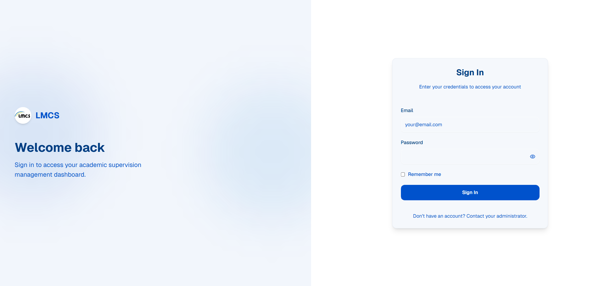
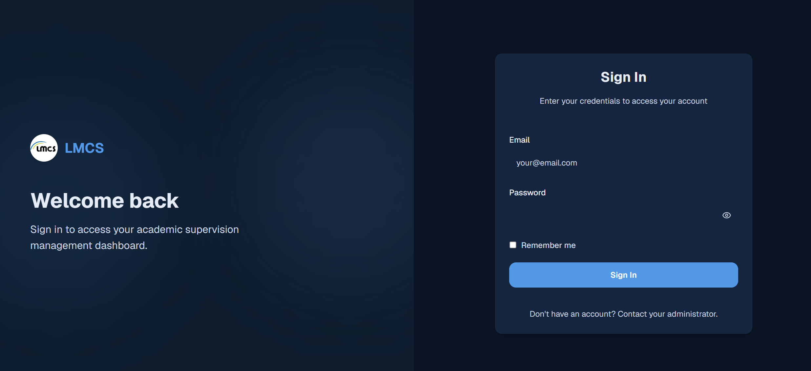
Admin Dashboard
The administrator's control center — displaying total users, approval status, and supervision counts at a glance. Below, the User Management table allows searching, filtering by role, and managing accounts.
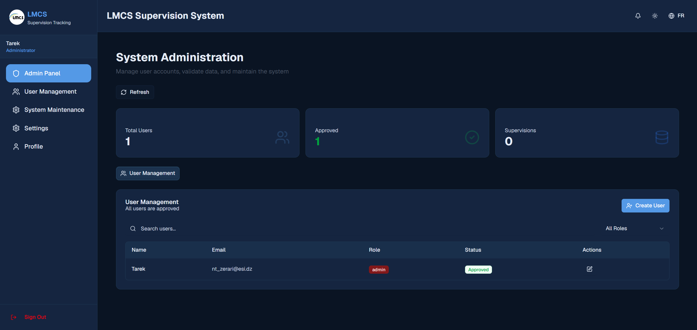
User Management
A detailed user management view with a data table showing names, emails, roles (with color-coded badges), departments, join dates, and quick actions — plus a summary panel breaking down users by role.
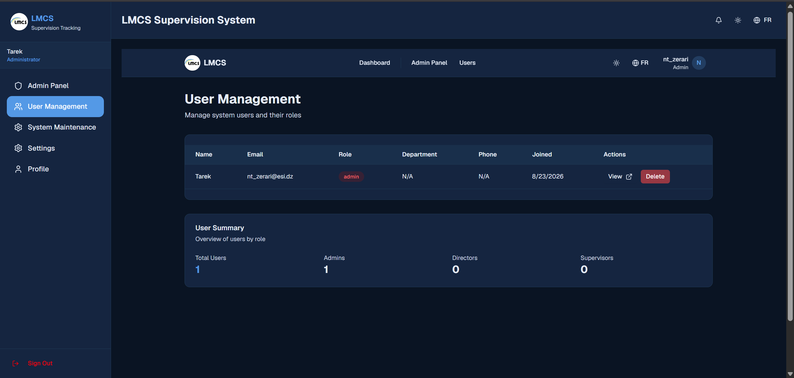
Director — Global Statistics
The director's statistics dashboard provides a bird's-eye view of the laboratory — total supervisions, active/completed ratios, status distribution charts, supervision type breakdowns, and performance metrics.
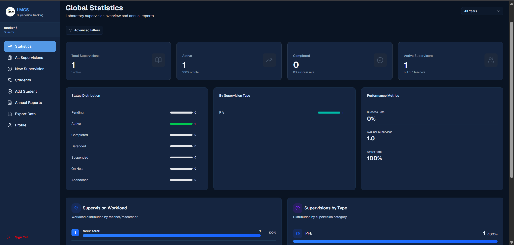
Director — Reports & Analytics
The reports page features color-coded stat cards, distribution pie charts, bar graphs for role breakdowns, academic year trends, and CSV/PDF export capabilities for annual reporting.
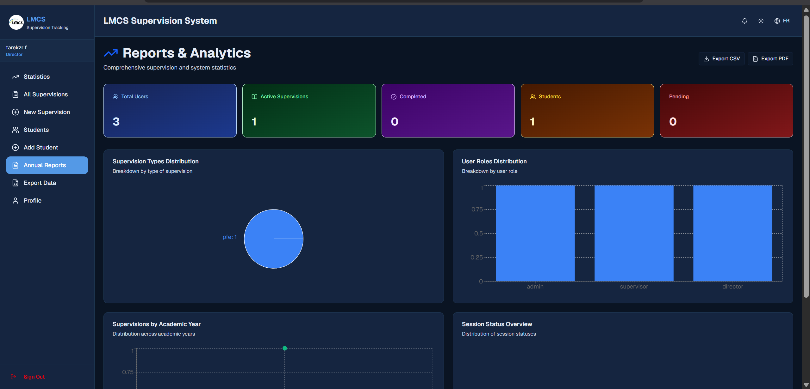
Supervisor Dashboard
The supervisor's workspace shows their personal supervision history with a searchable, filterable data table — displaying title, type, student, status, year, and quick-action buttons for editing and viewing details.
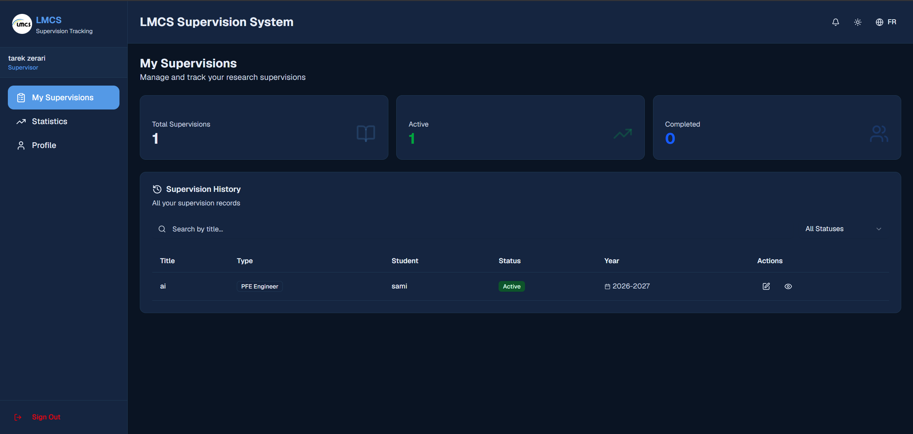
From fragmented to unified
The transformation wasn't just visual — it was structural. The platform replaced an entire manual workflow.
Supervision records were fragmented across personal spreadsheets and manual emails. Department directors lacked live completion tracking, and student submissions frequently suffered from lost version history and uncoordinated review threads.
A centralized full-stack portal with three synchronized role views. Supervisors evaluate milestone progress in real-time, directors export certified reports instantly, and administrators manage laboratory accounts and roles with full audit logs.
Key engineering takeaways
Engineering LMCS demonstrated the value of robust relational schemas and fine-grained access control when building mission-critical enterprise software.
Database-enforced security
Relying on PostgreSQL Row Level Security (RLS) ensured data boundary enforcement at the persistence tier, mitigating any risk of authorization leakage across API routes.
Component modularity
Architecting reusable data tables, faceted search bars, and stat counters allowed consistent UI assembly across all three distinct user dashboards.
State synchronization
Optimizing server-side data fetching with Next.js App Router reduced initial page payload while keeping client interactive filters lightning fast.